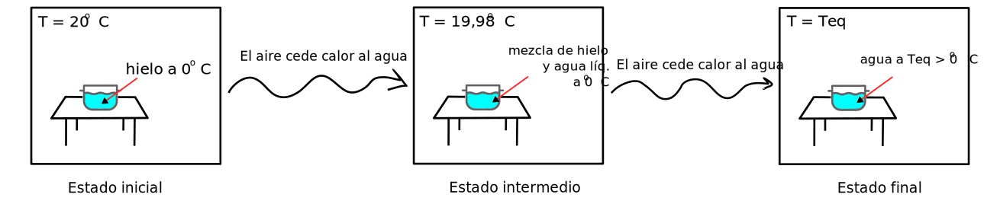
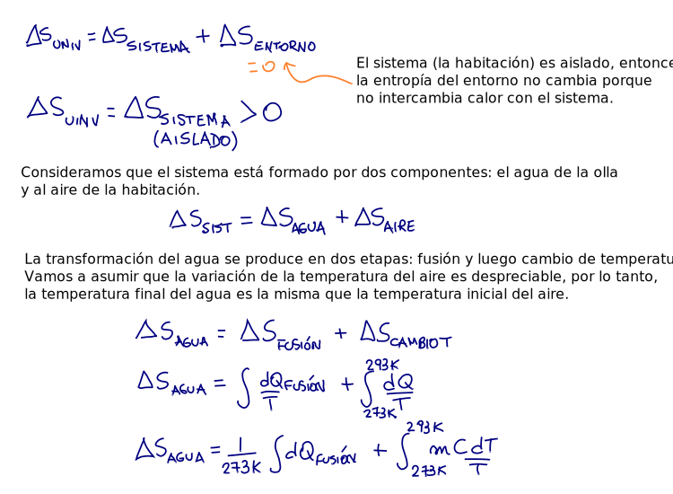
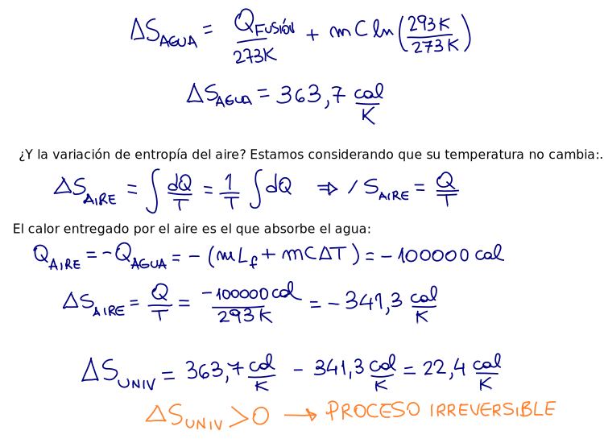

Segunda ley
La entropía del Universo nunca disminuye:
\(\Delta S_\text{Universo} \geq 0\)
y solo permanece constante cuando el proceso es reversible.
Entonces, para un sistema aislado siempre se debe cumplir: \(\Delta S \geq 0\)
La entropía de un sistema puede disminuir, lo que no puede disminuir es la entropía de un sistema aislado.
Retomamos el ejemplo de la olla con hielo en ambiente aislado del exterior. Se tiene 1 kilogramo de hielo a 0 grados Celsius en un ambiente a 20 grados Celsius.
¿Cuánto varía la entropía del Universo en este proceso?
 La segunda ley nos impone una condición que deben cumplir los procesos para ser posibles.
Nunca veremos que el agua a 20 grados C vuelva a transformarse en hielo en esta habitación, porque la variación de entropía del Universo en ese proceso resultaría negativa.
Por supuesto que se puede congelar agua, pero no será un proceso espontáneo.